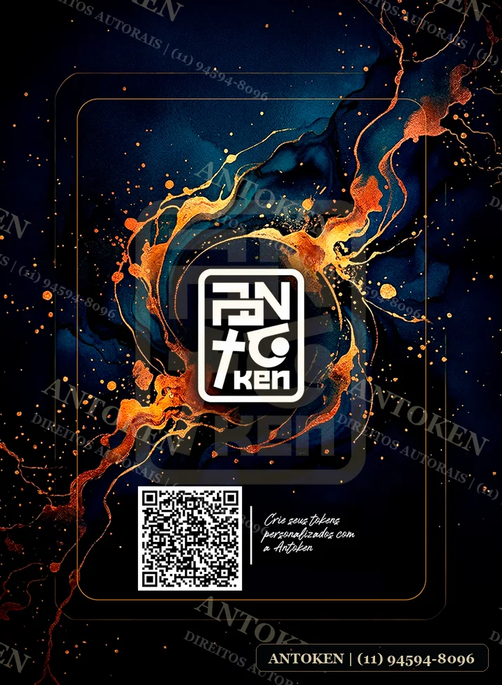

Tokens premium para Magic
Antoken
Tokens para Magic com presença de carta de verdade: arte marcante, leitura clara e acabamento caprichado para sua mesa.
Coleção nova · display físico
Ecos de Kamigawa.
Essa leva foi fotografada sobre um display físico de verdade, com cenário e profundidade — não é um recorte plano da arte. Como a imagem não dá pra recortar e imprimir como carta, essas fotos não levam marca d’água.
Catálogo protegido
Artes prontas para entrar em jogo.
Confira as prévias disponíveis. As imagens do site são versões protegidas; para comprar, imprimir ou pedir um token personalizado, fale direto com a Antoken.
Verso das cartas
Identidade Antoken dos dois lados.
Este é o verso usado nos tokens: visual escuro, marca forte e acabamento de card para manter a mesa bonita mesmo quando a ficha estiver virada.

Direitos autorais
A vitrine mostra a arte sem entregar o arquivo original.
As artes recortadas do catálogo clássico levam uma prévia com watermark aplicado, e o clique com o botão direito exibe o aviso de copyright. Já as peças fotografadas em display — como a Ecos de Kamigawa — são cenas reais da mesa, não um arquivo pronto pra imprimir, então dispensam a marca d’água.
As artes pertencem à Antoken. Para comprar, usar em um pedido ou solicitar uma ficha exclusiva, chame: (11) 94594-8096.
Encomendas e dúvidas
Quer um token específico?
Envie a ficha, o tema do deck ou a ideia da arte. A resposta vem pelo WhatsApp.